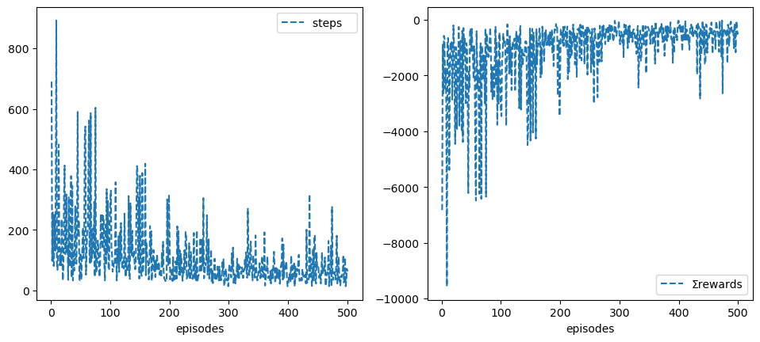
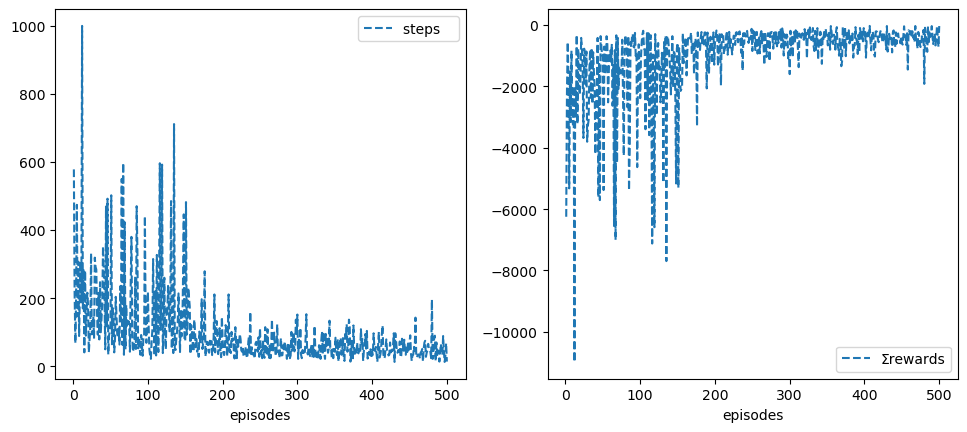

The notebook uses a library of functionality in RL that aims for simplicity and general insight into how algorithms work, these libraries are written from scratch using standard Python libraries (numpy, matplotlib etc.). Please note that you will need permission from the author to use the code for research, commercially or otherwise.
Lesson 16: RL on Robotics
Learning outcomes 1. understand how to create a simple Robot environment that links to Gazebo 1. understand how to deal with the simulated environment in a grid world fashion 1. appreciate the intricacy of applying RL to the robotics domain 1. build on previous concepts to come up with a suitable solution to a problem at hand 1. understand how a replay buffer helps us to come closer to supervised learning and appreciate the important role it plays in reaching convergence 1. understand how to combine deep reinforcement learning with deep learning to create a powerful framework that allows automatic agent learning by observation or self-play. 1. understand how a replay buffer helps us to come closer to supervised learning and appreciate the important role it plays in reaching convergence for difficult problems that involve image processing and reinforcement learning
Reading: We cover applications of RL on robotics based on previouse units which you can refere to.
In this notebook, we deal with how to set up a robot environment class that can handle the publish-subscribe on topics and deal with services in ROS. We must have ROS and Gazebo installed and set up on our machine. The code is a starting point and is not fully developed. You will need to write the necessary functionality to address a specific requirement. The main idea of tackling robotics applications in a Jupyter notebook is to utilise the provided infrastructure and libraries of code we covered in earlier units.
Instructions for running Experiments on Azure VM
The VM usage limit is set to 40 hours. Please turn off the machine when not using it to preserve your time. The VM is not set to disconnect you automatically so that you can leave it training the robot continuously for assessment 2.
Please turn off the screen save and screen lock in Xfce(Applications->Settings->Light Locker) as it may cause the machine to become not responsive, which in turn, causes Azure to stop it automatically.
If the VM becomes corrupted for some reason, then you can reimage it by going to Azure Lab page and selecting the three dots, then reimage. Reimage will reset the VM to its initial settings but it causes all data you have on the machine to be lost. You are advised to backup your data, you may want to use OneDrive or other backup methods.
Note If Gazebo stops for any reason, the provided code has a try-except statement (in lesson 4 Monte Carlo) that you can activate (comment in). It allows you to continue training even if the robot becomes not responsive without having to restart the experiment.
If you are running out of time, please let your tutor know in advance and they will try to increase your VM time allowance.
Turtlebot3
Install turtlebot3 packages. If you are in our VM, they would have been already installed.
More realistic Simulation: Running Gazebo
You will need to launch a gazebo environment with Turtlebot3 in it. So long as the /scan(LaserScan), /odom (Odometry) and /cmd_vel(Twist) topics are available, the environment should work fine. Our target is to build an environment that will allow us to use the algorithms we developed in earlier units directly.
To launch an environment, you should open a terminal and run the following command
ros2 launch turtlebot3_gazebo turtlebot3_house.launch
Note that you cannot do that here because that will block the notebook from executing other code. You must select restart your notebook kernel, ex. Kernel-> Restart and Run ALL, whenever you want to re-establish a connection with the environment.
%matplotlib inline
import rclpy as ros
from rclpy.node import Node
from geometry_msgs.msg import Twist
from nav_msgs.msg import Odometry
from sensor_msgs.msg import LaserScan
from std_srvs.srv import Empty
from gazebo_msgs.srv import SpawnModel
import numpy as np
from numpy import Inf
from random import randint
from math import atan2, atan, pi
import matplotlib.pyplot as plt
ros.init()
# !export PATH="home/rl/.local/bin:/opt/ros/humble/share:$PATH"
# !python3 -c "import rclpy as ros; ros.init()"
Moving the robot(Actions)
We start by controlling the robot only
Go to /opt/ros/humble/share/turtlebot3_gazebo/models/turtlebot3_burger/model.sdf and adjust the
def name(): return 'node'+str(randint(1,1000))
class Env(Node):
# initialisation--------------------------------------------------------------
# frequency: how many often (in seconds) the spin_once is invoked, or the publisher is publishing to the /cmd_vel
def __init__(self, name=name(),
freq=1/20, n=28,
speed=.5, θspeed=pi/5,
rewards=[30, -10, 0, -1],
verbose=False):
super().__init__(name)
self.freq = freq
self.n = n
self.speed = speed
self.θspeed = round(θspeed,2)
self.robot = Twist()
self.rewards = rewards
self.verbose = verbose
# do not change----------------------------------------------------
self.x = 0 # initial x position
self.y = 0 # initial y position
self.θ = 0 # initial θ angle
self.scans = np.zeros(60) # change to how many beams you are using
self.t = 0
self.tol = .6 # meter from goal as per the requirement (tolerance)
self.goals = [[2.0, 2.0], [-2.0, -2.0]]
# -----------------------------------------------------------------
self.controller = self.create_publisher(Twist, '/cmd_vel', 0)
self.timer = self.create_timer(self.freq, self.control)
self.scanner = self.create_subscription( LaserScan, '/scan', self.scan, 0)
self.odometr = self.create_subscription( Odometry, '/odom', self.odom, 0)
self.range_max = 3.5
self.range_min = .28 # change as you see fit
# establish a reset client
self.reset_world = self.create_client(Empty, '/reset_world')
while not self.reset_world.wait_for_service(timeout_sec=2.0):
print('world client service...')
# compatibility----------------------------------------------
nturns = 15 # number of turns robot takes to complete a full circle
resol = speed/2
θresol = 2*pi/nturns
dims = [4,4]
self.xdim = dims[0] # realted to the size of the environment
self.ydim = dims[1] # realted to the size of the environment
self.resol = round(resol,2)
self.θresol = round(θresol,2)
self.cols = int(self.xdim//self.resol) +1 # number of grid columns, related to linear speed
self.rows = int(self.ydim//self.resol) +1 # number of grid rows, related to linear speed
self.orts = int(2*pi//self.θresol) +1 # number of angles, related to angular speed
self.nC = self.rows*self.cols # Grid size
self.nS = self.rows*self.cols*self.orts # State space size
self.nA = 3
self.Vstar = None # for compatibility
# ---------------------------------------------------------------
# self.rate = self.create_rate(30)
self.reset()
print('speed = ', self.speed)
print('θspeed = ', self.θspeed)
print('freq = ', self.freq)
# sensing--------------------------------------------------------------
# odometry (position and orientation) readings
def odom(self, odoms):
self.x = round(odoms.pose.pose.position.x, 1)
self.y = round(odoms.pose.pose.position.y, 1)
self.θ = round(self.yaw(odoms.pose.pose.orientation),2)
self.odom = np.array([self.x, self.y, self.θ])
if self.verbose: print('odom = ', self.odom )
# laser scanners readings
def scan(self, scans):
self.scans = np.array(scans.ranges)
self.scans[scans==Inf] = self.range_max
# if self.verbose: print('scan = ', self.scans[:10].round(2))
if self.verbose: print('scan = ', np.r_[self.scans[-5:], self.scans[:5]].round(2))
# converting to the quaternion self.z to Euler
# see https://www.allaboutcircuits.com/technical-articles/dont-get-lost-in-deep-space-understanding-quaternions/#
# see https://eater.net/quaternions/video/intro
def yaw(self, orient):
x, y, z, w = orient.x, orient.y, orient.z, orient.w
yaw = atan2(2.0*(x*y + w*z), w*w + x*x - y*y - z*z)
return yaw if yaw>0 else yaw + 2*pi # in radians, [0, 2pi]
# angular distance of robot to a goal.............................................
def θgoal(self, goal):
xgoal, ygoal = self.goals[goal]
x, y = self.x, self.y
θgoal = atan2(abs(xgoal-x), abs(ygoal-y)) # anglegoal
# if θgoal<=0 θgoal += 2*pi
return round(θgoal, 2) # in radians, [0, 2pi]
# Eucleadian distance of robot to nearest goal......................................
def distgoal(self):
dists = [Inf, Inf] # distances of robot to the two goals
for goal, (xgoal, ygoal) in enumerate(self.goals):
dists[goal] = (self.x - xgoal)**2 + (self.y - ygoal)**2
dist = min(dists) # nearest goal distance
goal = dists.index(dist) # nearest goal index
if self.verbose: print('seeking goal ____________________', goal)
return round(dist**.5, 2), goal
# robot reached goal ...............................................................
def atgoal(self):
tol, x, y = self.tol, self.x, self.y
atgoal = False
for xgoal, ygoal in self.goals:
atgoal = xgoal + tol > x > xgoal - tol and \
ygoal + tol > y > ygoal - tol
if atgoal: print('Goal has been reached woohoooooooooooooooooooooooooooooo!!'); break
return atgoal
# robot hits a wall...................................................................
def atwall(self, rng=5):
# check only 2*rng front scans for collision, given the robot does not move backward
return np.r_[self.scans[-rng:], self.scans[:rng]].min() < self.range_min
#return self.scans.min()<self.range_min
# reward function to produce a suitable policy..........................................
def reward(self, a, imp=2):
stype = [self.atgoal(), self.atwall(), a==1, a!=1].index(True)
dist, goal = self.distgoal()
θgoal = self.θgoal(goal)
# get angular distance to reward/penalise robot relative to its orientation towards a goal
θdist = abs(self.θ - θgoal)
if goal==1: θdist -= pi
θdist = round(abs(θdist),2)
reward = self.rewards[stype]
if stype: reward -= imp*(dist+θdist)
if self.verbose:
print('reward components=',
'Total reward=', reward,
'state reward=', self.rewards[stype],
'goal dist=', dist,
'|θ-θgoal|=', θdist)
# 'θrobot=', self.θ,
# 'θgoal =', θgoal,
# reset without restarting an episode if the robot hits a wall
if stype==1: self.reset()
return reward, stype==0, stype==1
# State representation-------------------------------------------------
# change this to generate a suitable state representation
def s_(self):
self.xi = int((self.x+self.xdim/2)//self.resol) # x index = col, assuming the grid middle is (0,0)
self.yi = int((self.y+self.ydim/2)//self.resol) # y index = row, assuming the grid middle is (0,0)
# pi/2 to be superficially resilient to slight angle variation to keep θi unchanged
self.θi = int((self.θ+pi/2)%(2*pi)//self.θresol)
self.si = self.xi + self.yi*self.cols # position state in the grid
self.s = self.nC*(self.θi) + self.si # position state with orientation
if self.verbose: print('grid cell= ', self.si, 'state = ', self.s)
return self.s
# Control--------------------------------------------------------------
def spin_n(self, n):
for _ in range(n): ros.spin_once(self)
def control(self):
self.controller.publish(self.robot)
# move then stop to get a defined action
def step(self, a=1, speed=None, θspeed=None):
if speed is None: speed = self.speed
if θspeed is None: θspeed = self.θspeed
self.t +=1
if self.verbose: print('step = ', self.t)
if a==-1: self.robot.linear.x = -speed # backwards
elif a==1: self.robot.linear.x = speed # forwards
elif a==0: self.robot.angular.z = θspeed # turn left
elif a==2: self.robot.angular.z = -θspeed # turn right
# Now move and stop so that we can have a well defined actions
self.spin_n(self.n) if a==1 else self.spin_n(self.n//2)
self.stop()
reward, done, wall = self.reward(a)
return self.s_(), reward, done, {}
def stop(self):
self.robot.linear.x = .0
self.robot.angular.z = .0
# spin less so that we have smoother actions
self.spin_n(self.n//8)
# reseting--------------------------------------------------------------
def reset(self):
print('resetting world..........................................')
# to ensure earlier queued actions are flushed, there are better ways to do this
for _ in range(1): self.reset_world.call_async(Empty.Request())
for _ in range(2): self.step(a=1, speed=0.001) # move slightly forward to update the odometry to prevent repeating an episode unnecessary
for _ in range(1): self.reset_world.call_async(Empty.Request())
return self.s_()
# for compatibility, do not delete
def render(self, **kw):
pass
Ok, let us now test our little environment, to do so, open a terminal and launch the simple environment be executing the following command:
ros2 launch turtlebot3_gazebo turtlebot3_simple.launch.py
To make the testing smoother, you can right-click Gazebo and keep the window on top. You can also press ctrl+R to reset the environment.
Rotational and Translational Calibration
Let us calibrate the rotational and translational movements of our robot settings. The idea here is to be able to get a consistent behaviour where a robot can consistently complete a full circle in a specified number of times most of the times. This is a trial and error process, we usually need to experiment with different settings, bearing in minde the accuracy and efficiency of the robot training that will take place later.
The frequency plays an important role as it specifies how many times the velocity changes commands are going to be executed per seconds. This is via our subscription to the /cmd_vel topic and the create_timer() function of the Node class. The second important factor is the number of times the spin_once() is going to be executed. Spining a few times after publishing a command helps stablise the behaviour and gives us more consistency because it helps flush any delayed execution as well as any delayed subscription due to the robot hardware limitation which is simulated to an extent in Gazebo.
Rotation in place to form a full \(2\pi\) circle
You could try to increase the θspeed but that will result in more slippage. It is also possible to increase the speed of execution (rather that the speed of the robot) by playing with n which is the number of times a spin_once() is executed. You could also speed up the clock by increasing the hz (frequency) of execution.
hz = 20 # increase to speed up, default is 20, max 30 to speed up
n = 28 # decrease to shorten the movements, default is 30, min 5 to speed up
env = Env(speed=.5, θspeed=pi/5, freq=1/hz, n=n, verbose=True)
resetting world..........................................
step = 1
scan = [1.19 2.51 2.43 2.41 2.39 2.38 2.39 1.54 1.51 2.62]
odom = [ 0. -0. 0.]
odom = [0. 0. 0.]
odom = [0. 0. 0.]
odom = [ 0. -0. 0.]
odom = [ 0. -0. 0.]
odom = [ 0. -0. 0.]
scan = [1.22 2.53 2.45 2.39 2.37 2.37 2.4 1.54 1.51 2.62]
odom = [ 0. -0. 0.]
odom = [ 0. -0. 0.]
odom = [ 0. -0. 0.]
odom = [ 0. -0. 0.]
odom = [ 0. -0. 0.]
odom = [ 0. -0. 0.]
scan = [1.22 2.53 2.45 2.39 2.38 2.38 2.4 1.52 1.49 2.62]
odom = [ 0. -0. 0.]
odom = [ 0. -0. 0.]
seeking goal ____________________ 0
reward components= Total reward= -7.24 state reward= 0 goal dist= 2.83 |θ-θgoal|= 0.79
grid cell= 144 state = 1011
step = 2
odom = [ 0. -0. 0.]
odom = [ 0. -0. 0.]
odom = [ 0. -0. 0.]
odom = [ 0. -0. 0.]
scan = [1.19 2.52 2.43 2.4 2.39 2.38 2.39 1.53 1.52 2.6 ]
odom = [ 0. -0. 0.]
odom = [ 0. -0. 0.]
odom = [ 0. -0. 0.]
odom = [ 0. -0. 0.]
odom = [ 0. -0. 0.]
odom = [ 0. -0. 0.]
scan = [1.2 2.51 2.45 2.4 2.36 2.38 2.39 1.54 1.5 2.62]
odom = [ 0. -0. 0.]
odom = [ 0. -0. 0.]
odom = [ 0. -0. 0.]
odom = [ 0. -0. 0.]
odom = [ 0. -0. 0.]
odom = [ 0. -0. 0.]
scan = [1.21 2.51 2.44 2.4 2.39 2.39 2.38 1.54 1.53 2.61]
odom = [ 0. -0. 0.]
seeking goal ____________________ 0
reward components= Total reward= -7.24 state reward= 0 goal dist= 2.83 |θ-θgoal|= 0.79
grid cell= 144 state = 1011
grid cell= 144 state = 1011
speed = 0.5
θspeed = 0.63
freq = 0.05
def rotate_test(env):
env.reset( )
for _ in range(1+39):
env.step(0)
# %time rotate_test(env)
Translation calibration, moving in a straight line
You could try to increase the speed but that will result in bending.
def forward_test(env):
env.reset( )
# for _ in range(2): env.step(0)
for _ in range(10):
env.step()
# forward_test(env)
# env.reset()
Manual solution (policy) to the given problem
def optimal_policy1(env):
env.reset( )
for _ in range(3): env.step(0)
for _ in range(5): env.step()
for _ in range(3): env.step(0)
for _ in range(2): env.step()
# %time optimal_policy1(env)
def optimal_policy2(env):
env.reset( )
for _ in range(13): env.step(2)
for _ in range(6): env.step()
for _ in range(5): env.step(2)
for _ in range(2): env.step()
# %time optimal_policy2(env)
Applying an RL Algorithms to Train a Turtlebot3 to Autonomously Reach the Goals
Now let us apply Sarsa on this problem
from rl.rl import *
# env_slow = Env(speed=.5 , θspeed=pi/2, verbose=False) # slower more thorough
# env_fast = Env(speed= 1., θspeed=.75*pi, verbose=False) # useful for testing
# env = env_fast
# short max_t so that an episode does not take long
# sarsa = Sarsa(env=env, α=.1, max_t=200, episodes=300, seed=0, **demoGame()).interact()
Resume Training and Extend training
If training intrrupted for any reason (including finishing the assigned number of episodes), you can resume it by passing resume=True to the interact() function.
# env.reset()
# sarsa.interact(resume=True)
# sarsa.episodes = 1000
# # sarsa.rewards=[100, -10, 0, -1]
# %time sarsa.interact(resume=True)
Vectorised Environment
Let us now try to changed teh states from a number/index into vector. We will simply utilise the laser scans. We can use them as is or try to turn them into some form of a hot encoding or tile coding. Below we show a simple implementaiton which you can build on. Note that we will import algorithms from RLv instead of RL so that we can use the vectorised linear model RL algorithms such Sarsa and Q_learning.
class vEnv(Env):
def __init__(self, nscans=60, **kw):
self.nF = nscans
super().__init__(**kw)
def s_(self):
max, min = self.range_max, self.range_min
φ = self.scans
φ[φ==Inf] = max
φ[φ==np.nan] = 0
φ[φ<min] = 0
φ = 1 - φ/max
return φ/φ.sum()
# def s_(self):
# nF, scans, range_max = self.nF, self.scans, self.range_max
# φ = np.r_[scans[-nF//2:], scans[:nF//2]]
# φ[φ==Inf] = range_max
# # φ[φ > range_max/2] = 0
# # φ[φ != 0] = 1
# # print(φ)
# return φ/φ.sum()
venv = vEnv(speed= .5, θspeed=pi/5, rewards=[30,-10,0,-1], verbose=True) # useful for testing
[WARN] [1715334431.685891644] [rcl.logging_rosout]: Publisher already registered for provided node name. If this is due to multiple nodes with the same name then all logs for that logger name will go out over the existing publisher. As soon as any node with that name is destructed it will unregister the publisher, preventing any further logs for that name from being published on the rosout topic.
resetting world..........................................
step = 1
odom = [0. 0. 0.]
scan = [1.23 2.52 2.44 2.4 2.38 2.38 2.4 1.53 1.52 2.63]
odom = [0. 0. 6.28]
odom = [ 0. -0. 0.]
odom = [ 0. -0. 0.]
odom = [ 0. -0. 0.]
odom = [ 0. -0. 0.]
odom = [ 0. -0. 0.]
odom = [ 0. -0. 0.]
scan = [1.19 2.49 2.44 2.4 2.36 2.39 2.41 1.56 1.52 2.6 ]
odom = [ 0. -0. 0.]
odom = [ 0. -0. 0.]
odom = [ 0. -0. 0.]
odom = [ 0. -0. 0.]
odom = [ 0. -0. 0.]
scan = [1.21 2.51 2.44 2.39 2.38 2.39 2.38 1.55 1.5 2.61]
odom = [ 0. -0. 0.]
odom = [ 0. -0. 0.]
seeking goal ____________________ 0
reward components= Total reward= -7.24 state reward= 0 goal dist= 2.83 |θ-θgoal|= 0.79
step = 2
odom = [ 0. -0. 0.]
odom = [ 0. -0. 0.]
odom = [ 0. -0. 0.]
odom = [ 0. -0. 0.]
scan = [1.19 2.52 2.44 2.4 2.38 2.39 2.38 1.53 1.5 2.63]
odom = [ 0. -0. 0.]
odom = [ 0. -0. 0.]
odom = [ 0. -0. 0.]
odom = [ 0. -0. 0.]
odom = [ 0. -0. 0.]
odom = [ 0. -0. 0.]
scan = [1.2 2.51 2.43 2.39 2.37 2.38 2.4 1.51 1.52 2.62]
odom = [ 0. -0. 0.]
odom = [ 0. -0. 0.]
odom = [ 0. -0. 0.]
odom = [ 0. -0. 0.]
odom = [ 0. -0. 0.]
odom = [ 0. -0. 0.]
scan = [1.21 2.51 2.44 2.38 2.39 2.38 2.4 1.53 1.52 2.6 ]
seeking goal ____________________ 0
reward components= Total reward= -7.24 state reward= 0 goal dist= 2.83 |θ-θgoal|= 0.79
speed = 0.5
θspeed = 0.63
freq = 0.05
Now it is time to apply Sarsa on robotics! Note that this might not generate a useful policy yet. You must adjust the above code and tune your RL method hyperparameters.
from rl.rlln import *
%time vsarsa = Sarsaλ(env=venv, α=.05, ε=.1, max_t=1000, episodes=500, seed=1, **demoGame()).interact()
CPU times: user 35min 38s, sys: 1min 23s, total: 37min 2s
Wall time: 7h 53min 35s

%time vtruesarsa = trueSarsaλ(env=venv, α=.05, ε=.1, max_t=1000, episodes=500, seed=1, **demoGame()).interact()
CPU times: user 30min 2s, sys: 1min 9s, total: 31min 12s
Wall time: 7h 4min 40s

# venv.θspeed = pi/3
# that means we are changing the env dynamics which is more challenging for the agent
# vsarsa.ε = .1
# vsarsa.dε= 1
# vsarsa.εmin
vsarsa.episodes = 540
# sarsa.rewards=[100, -10, 0, -1]
%time vsarsa.interact(env=venv, resume=True)
CPU times: user 30.8 s, sys: 1.42 s, total: 32.3 s
Wall time: 6min 31s
<RLv.Sarsaλ at 0x7f5ffd716f40>

vtruesarsa.episodes = 530
# sarsa.rewards=[100, -10, 0, -1]
%time vtruesarsa.interact(env=venv, resume=True)
CPU times: user 1min 25s, sys: 3.76 s, total: 1min 29s
Wall time: 18min 5s
<RLv.trueSarsaλ at 0x7f60340968b0>

venv.reset()
resetting world..........................................
step = 116815
scan = [0.23 0.24 0.28 0.28 0.12 0.12 0.12 0.15 0.17 0.18]
odom = [2.3 1.6 0.57]
scan = [1.2 2.52 2.43 2.39 2.38 2.37 2.41 1.54 1.51 2.62]
odom = [ 0. -0. 0.]
odom = [ 0. -0. 0.]
odom = [ 0. -0. 0.]
odom = [ 0. -0. 0.]
odom = [ 0. -0. 0.]
odom = [ 0. -0. 0.]
scan = [1.19 2.52 2.45 2.4 2.39 2.39 2.4 1.54 1.51 2.6 ]
odom = [ 0. -0. 0.]
odom = [ 0. -0. 0.]
odom = [ 0. -0. 0.]
odom = [ 0. -0. 0.]
odom = [ 0. -0. 0.]
odom = [ 0. -0. 0.]
scan = [1.2 2.51 2.44 2.39 2.38 2.4 2.39 1.54 1.52 2.61]
odom = [ 0. -0. 0.]
odom = [ 0. -0. 0.]
seeking goal ____________________ 0
reward components= Total reward= -7.24 state reward= 0 goal dist= 2.83 |θ-θgoal|= 0.79
step = 116816
odom = [ 0. -0. 0.]
odom = [ 0. -0. 0.]
odom = [ 0. -0. 0.]
odom = [ 0. -0. 0.]
scan = [1.22 2.52 2.43 2.39 2.39 2.39 2.41 1.54 1.52 2.6 ]
odom = [ 0. -0. 0.]
odom = [ 0. -0. 0.]
odom = [ 0. -0. 0.]
odom = [ 0. -0. 0.]
odom = [ 0. -0. 0.]
scan = [1.21 2.52 2.45 2.41 2.37 2.4 2.4 1.54 1.5 2.62]
odom = [ 0. -0. 0.]
odom = [ 0. -0. 0.]
odom = [ 0. -0. 0.]
odom = [ 0. -0. 0.]
odom = [ 0. -0. 0.]
odom = [ 0. -0. 0.]
scan = [1.21 2.52 2.44 2.39 2.37 2.38 2.39 1.53 1.49 2.61]
odom = [ 0. -0. 0.]
seeking goal ____________________ 0
reward components= Total reward= -7.24 state reward= 0 goal dist= 2.83 |θ-θgoal|= 0.79
array([0.01292713, 0.01281209, 0.0227836 , 0.02324465, 0.01027762,
0.00855598, 0.00619121, 0.00852212, 0.01901032, 0.01732261,
0.01271966, 0.01092166, 0.0123869 , 0.01278423, 0.01308601,
0.02420145, 0.02379162, 0.02363867, 0.02289693, 0.02216109,
0.02112418, 0.0060394 , 0.0024645 , 0.00575699, 0.00831019,
0.02626327, 0.02679824, 0.02755685, 0.02754739, 0.02787054,
0.02779497, 0.02766693, 0.02734911, 0.01158986, 0.01050995,
0.01039502, 0.01457711, 0.01629029, 0.00589362, 0.00818161,
0.01017182, 0.02215024, 0.02146195, 0.01321665, 0.01336568,
0.01321665, 0.01286833, 0.01212773, 0.01087723, 0.00950818,
0.02127673, 0.02375081, 0.02529406, 0.02671511, 0.0276625 ,
0.02650686, 0.01138107, 0.01230194, 0.01287275, 0.01305804],
dtype=float32)
Training Headless
To train more efficiently, turn off the gui in gazebo. To do so, go to the .launch file that you have launched gazebo with and comment out the follwoing lines:
IncludeLaunchDescription(
PythonLaunchDescriptionSource(
os.path.join(pkg_gazebo_ros, 'launch', 'gzclient.launch.py')
),
),